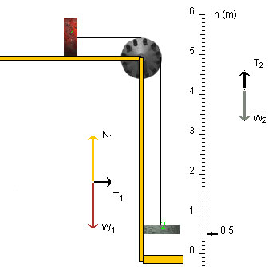

Yes, the magnitude T1 of the force exerted by the string on block 1 is less than the weight W2 of block 2.
Explanation
Have a look at the free-body diagrams for the two blocks in the diagram above.
One important thing to know is that the tension T in the string is the same on both sides of the pulley, since the pulley is massless and frictionless. This tension is equal to the magnitudes T1 and T2 of the forces exerted by the string on blocks 1 and 2, respectively. Thus, T = T1 = T2.
Now, block 2 is accelerating downward. Therefore, by Newton's second law, the net force acting on block 2 is downward also. Thus, T2 must be less than the weight W2 of block 2, as shown in the free-body diagram for block 2, and thus T1 must be less than W2 also.